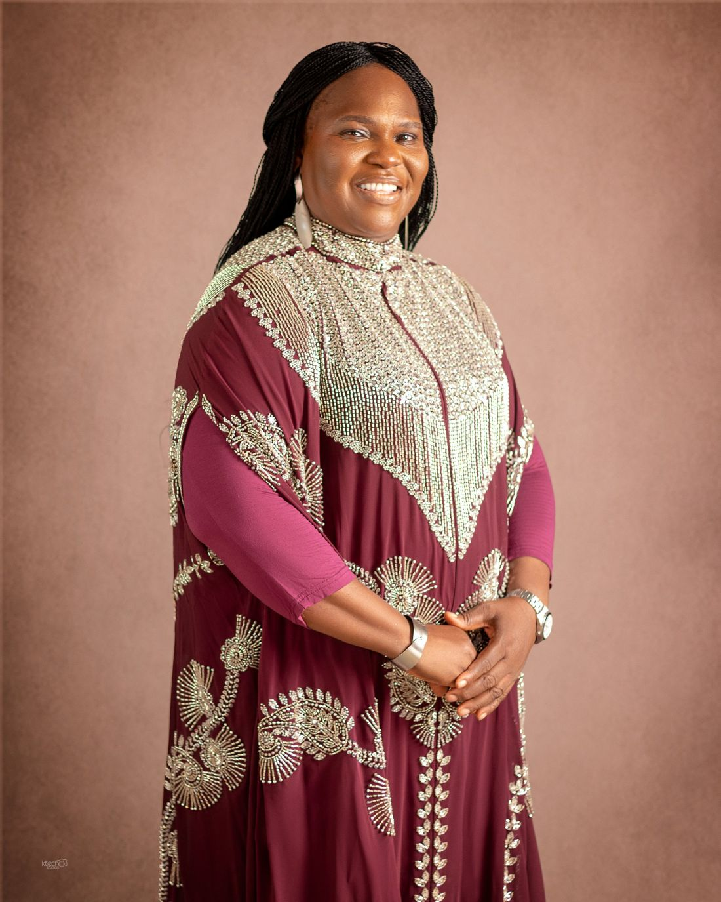

Her Story
In the Beginning
Dcns. Eyinade Olufunke Omotunde (née Akinyemi) was born in Ebute-Metta, Lagos State, Nigeria, on 22nd October 1966 into the family of Pa Samuel Oludayo and the late Mrs. Dorcas Oluyemi Akinyemi. Her father was an accountant who retired from Eagle, and her mother was a trader. Both were from Isara-Remo, Ogun State.
Educational Background
Olufunke started her primary education at Jehovah Jireh Primary School between 1972 and 1974 and was later transferred to Clementina Ajibade Memorial Primary School, a girls-only school established by the Lagos State Government. She was part of the pioneer set of students there from 1974 to 1977, before she transferred due to distance when her family moved into their private residence at Itire-Ijesha.
She then enrolled at Itire Nursery and Primary School, Johnson Bus Stop, Ijesha, where she obtained her First School Leaving Certificate on 20th July 1979. She proceeded to Ansar-Ud-Deen Girls High School, Odo-Eran, Itire, from 1979 to 1984.
In 1986, she gained admission to the Lagos State College of Education, Ijanikin (now Adeniran Ogunsanya College of Education, Oto-Ijanikin), where she obtained an NCE in Business Education / Secretarial Studies. From 1999 to 2003, she furthered her education and obtained a B.Sc. (Ed.) in Business Education / Marketing from the University of Ado-Ekiti, Ekiti State — a four-year programme approved by the Lagos State Government under study leave with pay.
In 2009, she proceeded to Lagos State University (LASU), Ojo, to pursue an M.Ed. in Educational Management, a one-year programme completed once again with approved study leave with pay from the Lagos State Government.

Career Background
Olufunke was employed by the Lagos State Teaching Service Commission (TESCOM) in 1992. Over the course of her career, she has served in the following schools:
- 1992 – 2003Atunrase Boys High School, Mushin2nd October 1992 – 6th January 2003
- 2003Atunrase Boys Junior High School, Mushin6th January 2003 – 21st February 2003
- 2003 – 2009Eko Boys Junior High School, Mushin21st February 2003 – 17th September 2009
- 2009 – 2014Mafoluku Junior Grammar School, Oshodi17th September 2009 – 19th September 2014
- 2014 – 2024Onilekere Junior High School, Ikeja19th September 2014 – 25th January 2024
- 2024 – dateIkeja Junior High School, Ikeja25th January 2024 to date
Honours & Awards
Under the leadership of Mrs S. O. Ajagbe
- Letter of Commendation for Effective Job Performance
- Letter of Commendation as Year Tutor for JSS 2
- Letter of Commendation for Effective Job Performance
Under the tenure of Mrs Qasim-Alabi Adeola
- Mentor Service Award — for unwavering support, unrelenting guidance, and leadership on the path to success
- Letter of Commendation for Effective Job Performance
- Special Recognition Award for Exceptional Service Delivery
At her place of worship, Living Faith Church Worldwide (Winners Chapel International), Canaanland, Ota, Ogun State, where she serves in the Ushering Unit, she was honoured as Best Wing Coordinator of the years 2021 and 2022. To God be all the glory.
Professional Development & Workshops
She has participated in several physical and online capacity-building programmes, including:
- Intel Teach Program: Skills for Success Course
- Three-Day Workshop on General Management for Senior Education Officers in the Lagos State Public Service
- Victoria Richards Empowering Learning Program (TEPO)
- Derolatt Ventures Limited ICT Training Workshop, courtesy of the Eko Project
- Four-Day Integrated School Records Management Course, Magodo, Lagos
- The Effective Use of ICT Across the School Curriculum
- Pre-Retirement and Financial Planning Workshop (TSSD), Owutu, Ikorodu, Lagos
- Teacher Training on Blended Learning
- Introduction to Safeguarding and Child Protection Online Learning Initiative, organised by DSVRT and OEQA
- Lagos State Pension Commission (LASPEC) Pre-Retirement Seminar for employees due to retire from the Lagos State Public Service
Professional Affiliations
She is an active member of the Association of Commercial Subject Teachers of Nigeria, Lagos State Chapter, and has received Certificates of Participation from the following conferences:
- The Role of Commercial Subject Teachers in Preparing Students for Entrepreneurship
- Educating Children in an Insecure Economy
- Pedagogical Alternatives to Teaching and Learning of Commercial Subjects in a Dynamic World
Community & Religious Service
She is a devoted member of Living Faith Church Worldwide (Winners Chapel International), Canaanland, where she actively serves in the Ushering Unit and as an ordained deaconess in the house of God.
Marital & Family Life
In 1992, she was joined in holy matrimony to her late husband, Pharm. Akanji Jacob Adeyemo Eyinade — a loving, caring, creative, innovative, hardworking and dedicated lover of God. He was a man of strong faith, profound humility, intellect, integrity and divine wisdom. May his soul continue to rest peacefully in the bosom of the Lord.
Their union was blessed with four wonderful children. To God be all the glory.